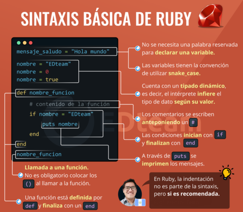

¿Qué es Ruby?
Ruby es un lenguaje de programación interpretado, reflexivo y orientado a objetos, creado por el programador japonés Yukihiro "Matz" Matsumoto.
Combina una sintaxis inspirada en Python y Perl con características de programación orientada a objetos similares a Smalltalk. Comparte también funcionalidad con otros lenguajes de programación como Lisp, Lua, Dylan y CLU. Ruby es un lenguaje de programación interpretado en una sola pasada y su implementación oficial es distribuida bajo una licencia de software libre.
¿Como es su sintaxis?
La sintaxis de Ruby es similar a la de Perl o Python. La definición de clases y métodos está definida por palabras clave. Sin embargo, en Perl, las variables no llevan prefijos. Cuando se usa, un prefijo indica el ámbito de las variables. La mayor diferencia con C y Perl es que las palabras clave son usadas para definir bloques de código sin llaves. Los saltos de línea son significativos y son interpretados como el final de una sentencia; el punto y coma tiene el mismo uso. A diferencia de Python, la sangría no es significativa. Una de las diferencias entre Ruby y Python y Perl es que Ruby mantiene todas sus variables de instancia privadas dentro de las clases y solo la expone a través de métodos de acceso (attr_writer, attr_reader, etc.). A diferencia de los métodos get y set de otros lenguajes como C++ o Java, los métodos de acceso en Ruby pueden ser escritos con una sola línea de código. Como la invocación de estos métodos no requiere el uso de paréntesis, es trivial cambiar una variable de instancia en una función sin tocar una sola línea de código o refactorizar dicho código. Los descriptores de propiedades de Python son similares pero tienen una desventaja en el proceso de desarrollo.
Si uno comienza en Python usando una instancia de variable expuesta públicamente y después cambia la implementación para usar una instancia de variable privada expuesta a través de un descriptor de propiedades, el código interno de la clase necesitará ser ajustado para usar la variable privada en vez de la propiedad pública. Ruby elimina está decisión de diseño obligando a todas las variables de instancia a ser privadas, pero también proporciona una manera sencilla de declarar métodos set y get. Esto mantiene el principio de que en Ruby no se puede acceder a los miembros internos de una clase desde fuera de esta; en lugar de esto se pasa un mensaje (se invoca un método) a la clase y recibe una respuesta.

¿Como funciona su semantica?
Ruby es orientado a objetos: todos los tipos de datos son un objeto, incluidas las clases y tipos que otros lenguajes definen como primitivas, (como enteros, booleanos, y nil). Toda función es un método. Las variables siempre son referencias a objetos, no los objetos mismos. Ruby soporta herencia con enlace dinámico, mixins y métodos singleton (pertenecientes y definidos por una sola instancia más que definidos por la clase). A pesar de que Ruby no soporta herencia múltiple, la clases pueden importar módulos como mixins. Es compatible con la sintaxis procedimental,